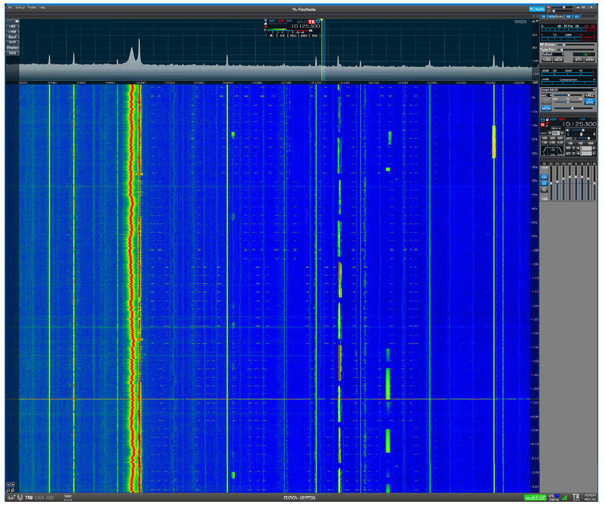

<!-- MHonArc v2.6.19+ -->
<!--X-Subject: Re: [NCDXC Chat] Odd Signal? -->
<!--X-From-R13: Egrir Rlre I1EDR &#60;j1feqNlnubb.pbz> -->
<!--X-Date: Tue, 24 Jan 2023 21:33:41 &#45;0600 -->
<!--X-Message-Id: fbd77276&#45;6b3a&#45;39dd&#45;7bf2&#45;84db2128c29a@yahoo.com -->
<!--X-Content-Type: multipart/alternative -->
<!--X-Reference: 1122296716.965417.1674606433086.ref@mail.yahoo.com -->
<!--X-Reference: 1122296716.965417.1674606433086@mail.yahoo.com -->
<!--X-Reference: CAOJjquhjRnrSo5yBAA=jApp2g+YJqrTKSJvuBk5j1HT6335ugA@mail.gmail.com -->
<!--X-Reference: dbe379a2474f402a89475207f8acae49@oppinfo.com -->
<!--X-Derived: pngf7Vro0OvpG.png -->
<!--X-Head-End-->
<!DOCTYPE HTML PUBLIC "-//W3C//DTD HTML 4.01 Transitional//EN"
        "http://www.w3.org/TR/html4/loose.dtd">
<html>
<head>
<title>Re: [NCDXC Chat] Odd Signal?</title>
<link rev="made" href="mailto:w1srd@yahoo.com">
</head>
<body>
<!--X-Body-Begin-->
<!--X-User-Header-->
<!--X-User-Header-End-->
<!--X-TopPNI-->
<hr>
[<a href="msg27637.html">Date Prev</a>][<a href="msg27639.html">Date Next</a>][<a href="msg27634.html">Thread Prev</a>][<a href="msg27631.html">Thread Next</a>][<a href="maillist.html#27638">Date Index</a>][<a href="threads.html#27638">Thread Index</a>]
<!--X-TopPNI-End-->
<!--X-MsgBody-->
<!--X-Subject-Header-Begin-->
<h1>Re: [NCDXC Chat] Odd Signal?</h1>
<hr>
<!--X-Subject-Header-End-->
<!--X-Head-of-Message-->
<ul>
<li><em>To</em>: <a href="mailto:chat%40ncdxc.org">chat@ncdxc.org</a></li>
<li><em>Subject</em>: Re: [NCDXC Chat] Odd Signal?</li>
<li><em>From</em>: Steve Dyer W1SRD &lt;<a href="mailto:w1srd%40yahoo.com">w1srd@yahoo.com</a>&gt;</li>
<li><em>Date</em>: Tue, 24 Jan 2023 19:31:03 -0800</li>
<li><em>Dkim-signature</em>: v=1; a=rsa-sha256; c=relaxed/relaxed; d=yahoo.com; s=s2048; t=1674617618; bh=YN8wTcp5C5+/ObF01stUjBspOn+8bwIZcUUW5fKGkXU=; h=Date:Subject:To:References:From:In-Reply-To:From:Subject:Reply-To; b=M2wu26xNPq1boJHzx+O21X/7yiH9i1LpdgWNcQJ1b/CuzksQPXgKdVHLZZCaZzNcsMsCKG0DvsjUy2Iu9SYZ7THpIRCl7qTb29wqVo/6hMirCkUqN/IOyuRaNShQ0zyjtdzfN3ltn2EdoY8zw/Sf59I58dIITYEsemMglnAjVzurmpRQt0RYHUVsdGzFAhG1HvCcp11icKBu4KlJwRXUwkVTviGtj407x0lsepOeHdjtEQBPc3wqNVgJxeZF5Yx1yeZEuGXvoTmzKz0Ynv/X3OddRykStQvGmVxlRmOTDlaXZNv9IG9UG6qov+2cje+FRPx21R+KE7oXvLiyLDUeIg==</li>
<li><em>In-reply-to</em>: &lt;<a href="msg27633.html">dbe379a2474f402a89475207f8acae49@oppinfo.com</a>&gt;</li>
<li><em>List-archive</em>: &lt;<a href="http://mail.ncdxc.org/mailman/private/chat_ncdxc.org/">http://mail.ncdxc.org/mailman/private/chat_ncdxc.org/</a>&gt;</li>
<li><em>List-help</em>: &lt;<a href="mailto:chat-request@ncdxc.org?subject=help">mailto:chat-request@ncdxc.org?subject=help</a>&gt;</li>
<li><em>List-id</em>: NCDXC Discussion List &lt;chat.ncdxc.org&gt;</li>
<li><em>List-post</em>: &lt;<a href="mailto:chat@ncdxc.org">mailto:chat@ncdxc.org</a>&gt;</li>
<li><em>List-subscribe</em>: &lt;<a href="http://mail.ncdxc.org/mailman/listinfo/chat_ncdxc.org">http://mail.ncdxc.org/mailman/listinfo/chat_ncdxc.org</a>&gt;, &lt;<a href="mailto:chat-request@ncdxc.org?subject=subscribe">mailto:chat-request@ncdxc.org?subject=subscribe</a>&gt;</li>
<li><em>List-unsubscribe</em>: &lt;<a href="http://mail.ncdxc.org/mailman/options/chat_ncdxc.org">http://mail.ncdxc.org/mailman/options/chat_ncdxc.org</a>&gt;, &lt;<a href="mailto:chat-request@ncdxc.org?subject=unsubscribe">mailto:chat-request@ncdxc.org?subject=unsubscribe</a>&gt;</li>
<li><em>References</em>: &lt;1122296716.965417.1674606433086.ref@mail.yahoo.com&gt; &lt;<a href="msg27628.html">1122296716.965417.1674606433086@mail.yahoo.com</a>&gt; &lt;CAOJjquhjRnrSo5yBAA=jApp2g+YJqrTKSJvuBk5j1HT6335ugA@mail.gmail.com&gt; &lt;<a href="msg27633.html">dbe379a2474f402a89475207f8acae49@oppinfo.com</a>&gt;</li>
<li><em>User-agent</em>: Mozilla/5.0 (Windows NT 10.0; Win64; x64; rv:102.0) Gecko/20100101 Thunderbird/102.6.1</li>
</ul>
<!--X-Head-of-Message-End-->
<!--X-Head-Body-Sep-Begin-->
<hr>
<!--X-Head-Body-Sep-End-->
<!--X-Body-of-Message-->

  
  
    I see a lot of stuff. Which one?<br>
    <br>
    <div class="moz-cite-prefix">On 1/24/2023 4:55 PM, David Oppenheimer
      via Chat wrote:<br>
    </div>
    <blockquote type="cite"
      cite="">
      
      
      
      
      
      
      
      
      <div class="WordSection1">
        <p class="MsoNormal"><span
            style="mso-bidi-font-family:&quot;Times New Roman&quot;">Hate
            to just bug folks ..<span style="mso-spacerun:yes">&#xA0;&#xA0;&#xA0;&#xA0;
            </span>I am watching a very odd signal that seems to be
            covering most of north America at the moment.<span
              style="mso-spacerun:yes">&#xA0;
            </span>Anyone ever see this before.<span
              style="mso-spacerun:yes">&#xA0; </span>Looking at SDR&#x2019;s across
            the country..<span style="mso-spacerun:yes">&#xA0;
            </span>and my own SDR in San Jose. <o:p></o:p></span></p>
        <p class="MsoNormal"><span
            style="mso-bidi-font-family:&quot;Times New Roman&quot;"><o:p>&#xA0;</o:p></span></p>
        <p class="MsoNormal"><span
            style="mso-bidi-font-family:&quot;Times New Roman&quot;">David<o:p></o:p></span></p>
        <p class="MsoNormal"><span
            style="mso-bidi-font-family:&quot;Times New Roman&quot;">WB6CRG<o:p></o:p></span></p>
        <p class="MsoNormal"><span
            style="mso-bidi-font-family:&quot;Times New Roman&quot;"><o:p>&#xA0;</o:p></span></p>
        <p class="MsoNormal"><span
            style="mso-bidi-font-family:&quot;Times New Roman&quot;"><o:p>&#xA0;</o:p></span></p>
        <div>
          <blockquote style="border:none;border-left:solid #CCCCCC
            1.0pt;mso-border-left-alt:solid #CCCCCC .75pt;padding:0in
            0in 0in
6.0pt;margin-left:4.8pt;margin-top:5.0pt;margin-right:0in;margin-bottom:5.0pt">
            <p class="MsoNormal"><span style="mso-no-proof:yes"></span><o:p></o:p></p>
          </blockquote>
        </div>
      </div>
      <br>
      <fieldset class="moz-mime-attachment-header"></fieldset>
      <pre class="moz-quote-pre" wrap="">_______________________________________________
Chat mailing list
<a rel="nofollow" class="moz-txt-link-abbreviated" href="mailto:Chat@ncdxc.org">Chat@ncdxc.org</a>
<a rel="nofollow" class="moz-txt-link-freetext" href="http://mail.ncdxc.org/mailman/listinfo/chat_ncdxc.org">http://mail.ncdxc.org/mailman/listinfo/chat_ncdxc.org</a>
</pre>
    </blockquote>
    <br>
  

<!--X-Body-of-Message-End-->
<!--X-MsgBody-End-->
<!--X-Follow-Ups-->
<hr>
<!--X-Follow-Ups-End-->
<!--X-References-->
<ul><li><strong>References</strong>:
<ul>
<li><strong><a name="27628" href="msg27628.html">[NCDXC Chat] 3Y0J Bouvet Progress</a></strong>
<ul><li><em>From:</em> Rob &lt;robsendemail@yahoo.com&gt;</li></ul></li>
<li><strong><a name="27629" href="msg27629.html">Re: [NCDXC Chat] 3Y0J Bouvet Progress</a></strong>
<ul><li><em>From:</em> Paul N6PSE &lt;pauln6pse@gmail.com&gt;</li></ul></li>
<li><strong><a name="27633" href="msg27633.html">[NCDXC Chat] Odd Signal?</a></strong>
<ul><li><em>From:</em> David Oppenheimer &lt;davido@oppinfo.com&gt;</li></ul></li>
</ul></li></ul>
<!--X-References-End-->
<!--X-BotPNI-->
<ul>
<li>Prev by Date:
<strong><a href="msg27637.html">Re: [NCDXC Chat] DX Spot S79/DL2SBY Seychelles 14.074 FT8 0217 UTC</a></strong>
</li>
<li>Next by Date:
<strong><a href="msg27639.html">[NCDXC Chat] Anyone else having Ft8WW card held hostage by unknown power?</a></strong>
</li>
<li>Previous by thread:
<strong><a href="msg27634.html">Re: [NCDXC Chat] Odd Signal?</a></strong>
</li>
<li>Next by thread:
<strong><a href="msg27631.html">[NCDXC Chat] SPOT VE3LYC/mm on 14.024 CW. On the way to Bouvet.</a></strong>
</li>
<li>Index(es):
<ul>
<li><a href="maillist.html#27638"><strong>Date</strong></a></li>
<li><a href="threads.html#27638"><strong>Thread</strong></a></li>
</ul>
</li>
</ul>

<!--X-BotPNI-End-->
<!--X-User-Footer-->
<!--X-User-Footer-End-->
</body>
</html>
